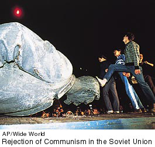

1. The rise and fall of Communism in Russia (1917-1991)
The Bolshevik Revolution
established the Soviet Union and brought about struggles between Communism
and capitalism and between totalitarianism and the open society. These
struggles dominated the century and ended with the victory of the open
society and free-market economies. The nature of Communism led to a
great cultural debate among intellectuals and artists. They argued intensely
about whether culture is autonomous or is the product of economic and
social forces and must be engaged for or against "progress" as defined
by leftist political opinion.

|
Donald G. Marshall
is a Professor and
the Head of the Department of English at the University of Illinois at Chicago.
His top 10 events of the 1900's reflect a general historical approach. Professor
Marshall emphasizes the impact of technology on the century and points out one
chilling effect : "The fear that humankind's highest scientific achievements will
destroy us becomes very real."
|